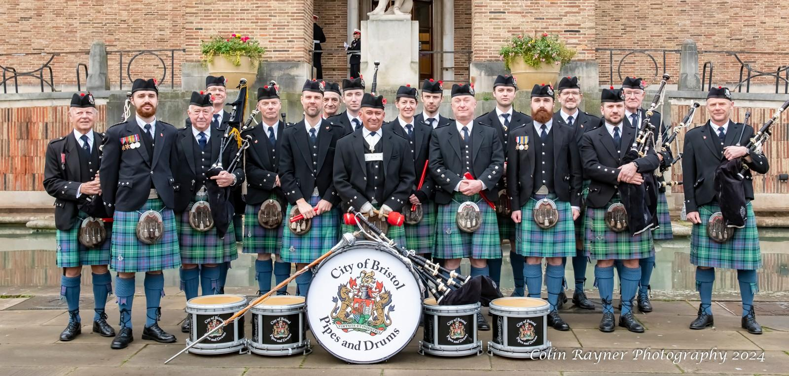
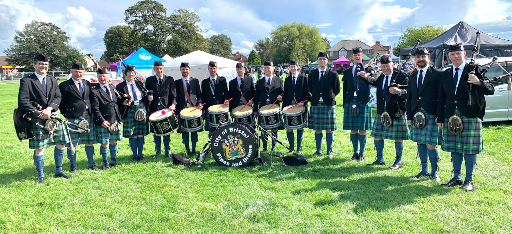
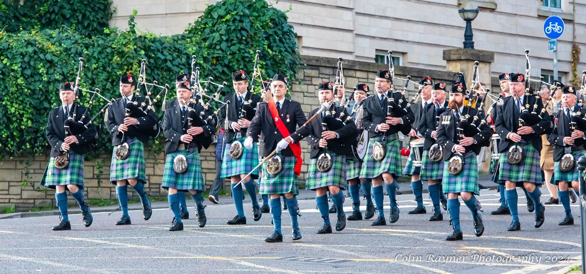
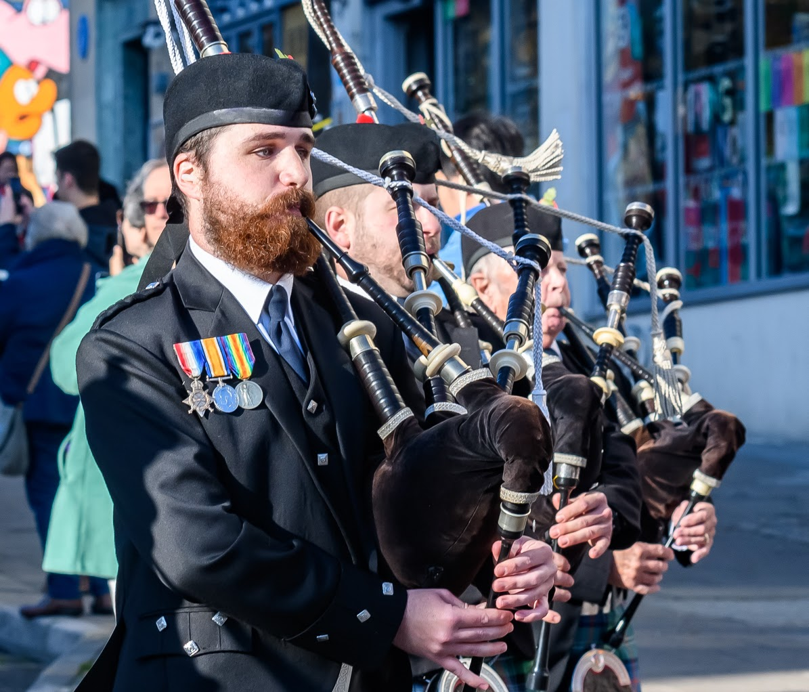

About us
From the back room of a pub to Bristol’s Remembrance Parade.
It all began in 1997 in the back room of the Bear Pub in Hotwells. Jimmie McQueen, a piper of some distinction, had not long arrived in Bristol and used this room to play his pipes. He knew several local pipers and they gathered together to play and be tutored by Pipe Major Brian McRae.
Within a few years, these pipers were joined by Army Bass Drummer John Morrison and drumming tutor Tom Patterson and two exceptionally good pipers, Bill Gass and Julian Smart.
The City of Bristol Pipes and Drums band was officially constituted and affiliated to the Royal Scottish Pipe Band Association. The first engagement of the Band was to lead the Remembrance Day Parade in Bristol City.
The band now meets weekly on Sunday mornings in central Bristol to practice under the current Pipe Major Julian Smart.
We are always ready to welcome new members, and if you would like the band to play at your event please get in touch.


